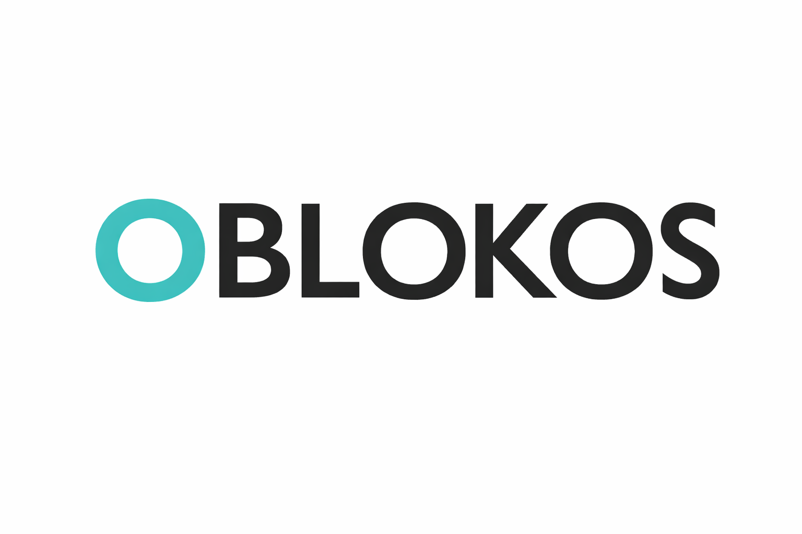

Verifiable Anchors
Contract (Polygon ERC-721): 0x252f9390feb63aeb00042dd5c4ff84af33f42b85
Root1 (Arweave): PCx7dfAg6p2cN8y5FbrZaLuYvS5o7ecyVi821yyLoPg

OBLOKOS - Archive and Document Index
Fragmented sculptural NFT system (ERC-721 on Polygon) with permanent infrastructure on Arweave.
Language versions
- English (default): this file
- Spanish mirror: index_es.md
System status
- Core infrastructure: Polygon + Arweave
- Cycle status: Closed (as-built)
- Institutional domain:
oblokos.nft
Verifiable anchors
- Contract (Polygon / ERC-721):
0x252f9390feb63aeb00042dd5c4ff84af33f42b85 - Root 1 (Arweave):
PCx7dfAg6p2cN8y5FbrZaLuYvS5o7ecyVi821yyLoPg - Root 1 public index: https://arweave.net/PCx7dfAg6p2cN8y5FbrZaLuYvS5o7ecyVi821yyLoPg/
These anchors allow verification of ownership, metadata, and renders without relying on a single exhibition platform.
Editorial summary
Project identity
Oblokos is a finite fragment system, not a collection of isolated pieces. Each NFT works as a structural and conceptual unit, and glitch is treated as a constructive condition (not ornament).
Primary reference: manifesto.md
Teleport Lab (derived installation)
Teleport Lab is a site-specific installation in Spatial using OBLK fragments as sculptural matter for portals, energetic layers, and ecological/perceptual reading. The 3D experience may depend on Spatial, but technical and documentary traceability can be preserved outside the platform.
Primary reference: docs/teleport_lab_dossier.md
Cycle closure
The current cycle is declared closed: no retroactive metadata/image rewrites and no additional emissions under the same contract. New stages require a new cycle (new contract and/or new roots).
Primary reference: docs/closing_statement.md
Document map
| File | Purpose |
|---|---|
| manifesto.md | Artist identity statement and core principles of the Oblokos system. |
| docs/whitepaper_v2.md | Conceptual and technical specification of fragments, layers, ownership, Polygon + Arweave infrastructure, and closed-cycle governance. |
| docs/teleport_lab_dossier.md | Curatorial and technical dossier for Teleport Lab: fact sheet, portal narrative, operation, preservation, and transfer model. |
| docs/nfts_teleport_lab.md | Inventory of NFTs used in Teleport Lab with token IDs, Arweave links, and marketplace references. |
| docs/glitch_system.md | Glitch framework as a transversal sculptural mechanic (z-fighting, transparency, flicker) and system coherence criterion. |
| docs/credits_teleport_lab.md | Full credits and licenses (CC-BY and proprietary components). |
| docs/acquisition_document.md | Installation acquisition/transfer template: included NFTs, rights, exclusivity, and operational clauses. |
| docs/closing_statement.md | Official closure statement and post-decentralization rules. |
Recommended reading order
- manifesto.md
- docs/whitepaper_v2.md
- docs/teleport_lab_dossier.md
- docs/glitch_system.md
- docs/nfts_teleport_lab.md
- docs/credits_teleport_lab.md
- docs/acquisition_document.md
- docs/closing_statement.md
Contact
- Email:
oblokos.web@gmail.com - Web3 domain: oblokos.nft (Unstoppable Domains)